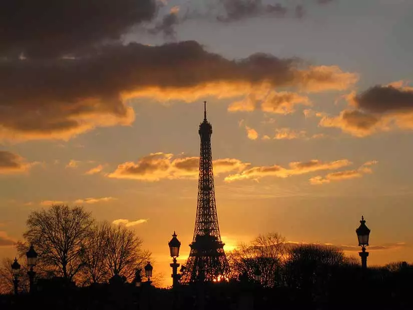
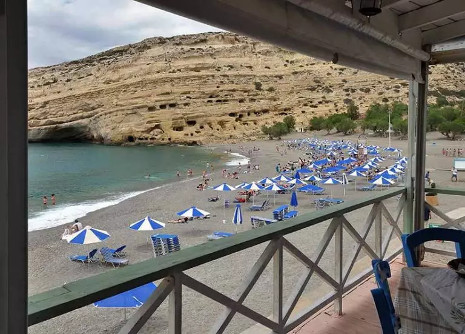
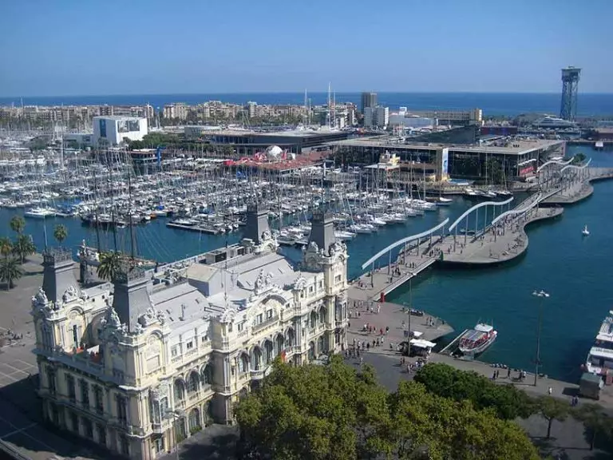

- Paris, França
- Londres, Reino Unido
- Roma, Itália
- Creta, Grécia
- Barcelona, Espanha
Melhores pontos turisticos para visitar na europa
A Fascinante História da Europa
A Europa é um continente onde a beleza é onipresente, um verdadeiro tesouro de paisagens diversificadas e encantadoras. Suas aldeias pitorescas parecem saídas de contos de fadas, com casas de pedra e flores coloridas adornando as ruas estreitas. As paisagens naturais variam desde praias de areias douradas até montanhas imponentes cobertas de neve. Os rios sinuosos e os lagos tranquilos refletem castelos majestosos e bosques exuberantes.
A arquitetura é uma obra-prima em cada esquina, com igrejas góticas, palácios renascentistas e praças antigas que contam histórias de séculos passados. A gastronomia é um deleite para os sentidos, com pratos locais que variam de queijos aromáticos e vinhos requintados a doces decadentes.
Mas o que torna a Europa verdadeiramente especial é a sua rica história e cultura. Cada cidade respira a herança de séculos de arte, música, literatura e inovação. A Europa é um convite à exploração, um lugar onde cada esquina revela uma nova surpresa e cada foto captura um pedaço dessa maravilhosa tapeçaria de beleza...
Neste artigo trago, em ordem, 5 destinos que foram eleitos em pesquisa do TripAdvisor os melhores para se conhecer na Europa em 2023/2024. Mostro as principais característica de cada um e dicas de onde visitar e quais os melhores bairros para se hospedar. A Europa sempre surpreende. Confira!
Melhores destinos para visitar na Europa
1 ) Paris, França
Abro a lista dos melhores lugares na Europa, simplesmente com a cidade luz, que não pode ficar de fora do roteiro!
Paris foi eleita, segundo a lista do TripAdvisor, a melhor cidade europeia para se visitar, pois esbanja charme, seja na arquitetura ou no vestuário das pessoas; a capital da França está situada entre as curvas do Rio Sena e possuí grande especialidade em vinhos, queijos e perfumes.
As principais atrações de Paris são a Torre Eiffel, Catedral de Notre Dame, Arco do Triunfo, Champs Élysées, Museus do Louvre, Jardim de Luxemburgo e o Cemitério Pére Lachaise. Os bairros mais recomendados para hospedar-se são Latino, Les Halles e Montmartre. Veja mais dicas de atividades turísticas na França.
2 )Londres, Reino Unido
Em segundo lugar na lista dos melhores lugares na Europa, aparece este verdadeiro parque mundial, rodeado de imigrantes de todas as partes do mundo; inclusive brasileiros, que contribuem como mais de cem mil pessoas na população local.
O centro da capital da Inglaterra é um dos principais polos comerciais do mundo, sediando algumas das principais empresas multinacionais e a capital é conhecida pela sua badalação nos bares, paixão por futebol e pelo charme da Família Real.
Os principais lugares turísticos de Londres são o Big Ben, a Roda-Gigante, o Palácio de Buckingham, Torre de Londres, o Palácio de Westminster, a Catedral de St Paul’s, Piccadilly Circus e o Museu Madame Tussauds. Para aproveitar melhor a agitação londrina, hospede-se nos bairros Westminster (atrações) e Convert Garden (Lojas).
3 )Roma, Itália
Na sequência da lista dos lugares na Europa, aparece certamente a capital mais lendária e repleta de histórias milenares da lista; essa é a quarta maior cidade da União Europeia e destaca-se pela riqueza arqueológica, religião, arte, moda e culinária, afinal é a terra do Spaghetti à Carbonara na Itália: Roma, a cidade eterna!
Dentre os destinos turísticos de Roma, destaca-se absolutamente o Coliseu, além da Basílica de São Pedro, Pizza Veneza, Fórum Romano, Campidoglio, Panteão Romano, Fontana di Trevi e, obviamente, o Vaticano. Os principais bairros para se hospedar são Castro pretório e Trevi.
4) Creta, Grécia
Em seguida, surge na lista dos melhores lugares na Europa o primeiro paraíso da Grécia, sendo esta a maior e mais populosa ilha do país. O local é muito preparado para o turismo, tanto que possuí três aeroportos e recebe estrangeiros do mundo todo em suas praias, principalmente em agosto, no auge do verão europeu.
Seus principais pontos turísticos são: o Museu Arqueológico de Heráklion, Palácio Knóssos, Praia Elafonisi (uma das melhores do mundo), Cretaquarium, Monastério Arkadi e os Castelos Venezianos. Preste atenção quanto ao local de hospedagem, pois a ilha é grande e você pode ficar muito distante; recomenda-se que fique nos hotéis em Chania.
5) Barcelona, Espanha
Na quinta colocação da lista, encontra-se simplesmente a cidade que mais recebe turistas na Espanha. Barcelona é moderna e tradicional, pois ao mesmo tempo que é mundialmente famosa pela badalação da vida noturna, preserva sua natureza, arquitetura e, principalmente, a arte local e todos os gênios que dela fizeram história.
Quando for à capital catalã, visite os seguintes atrativos turísticos de Barcelona: Sagrada Família, o Museu Picasso, a Casa Batllo, La Pedrera, Parque Güell, Camp Nou, Museu Nacional de Arte, Montserrat e Montjuic; já em relação aos melhores bairros, hospede-se na Cidade Velha ou Eixample.